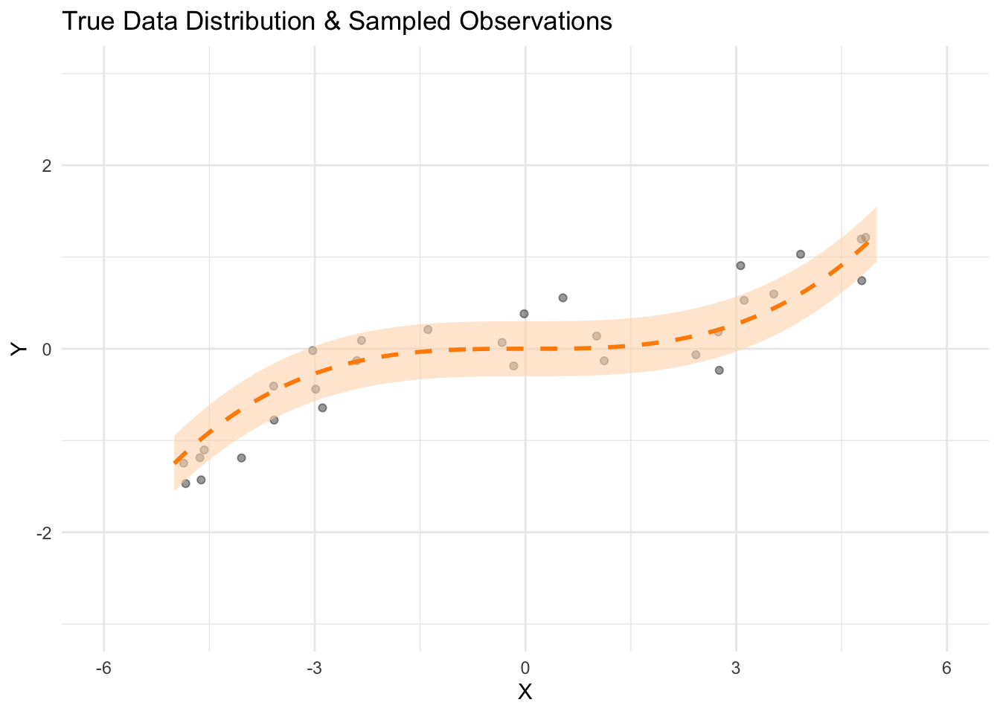
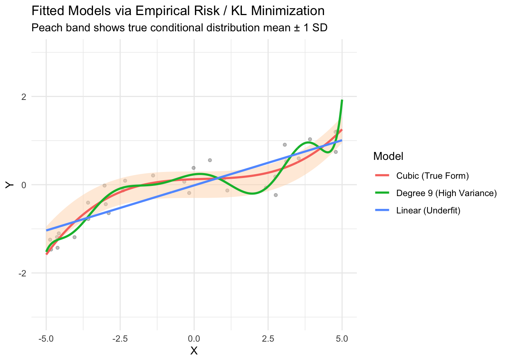
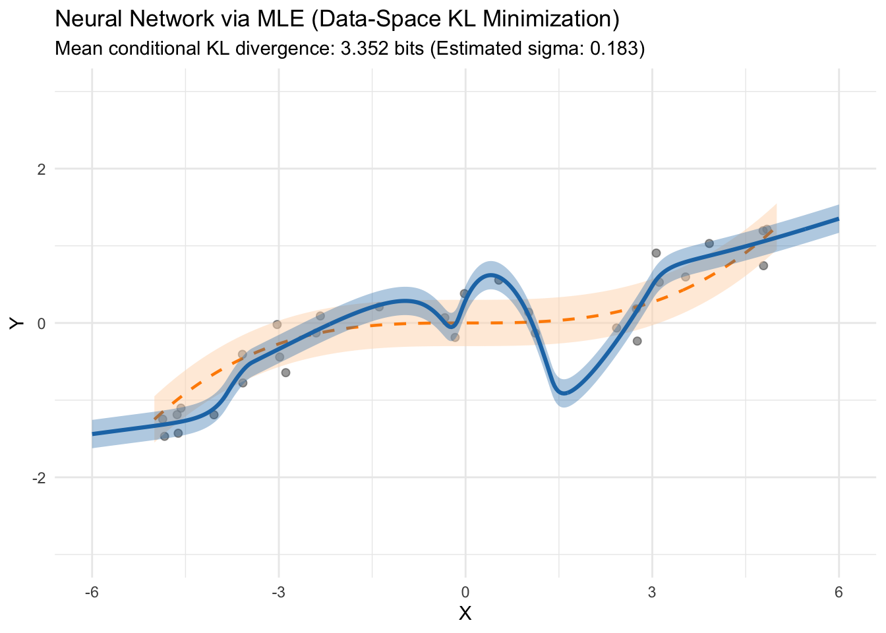
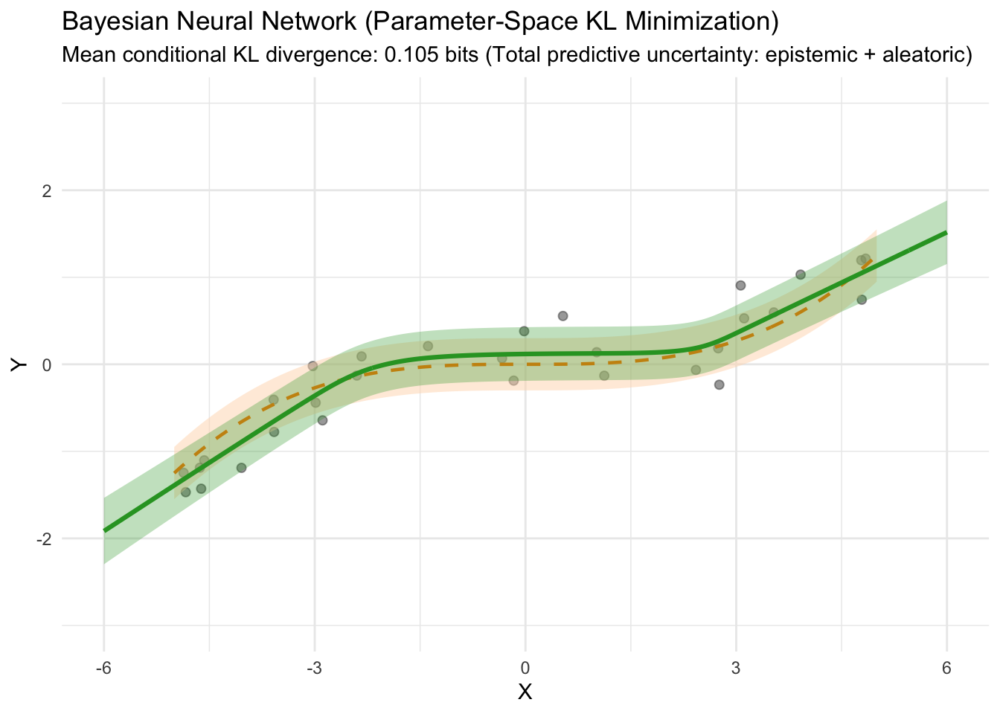

library(tidyverse)
library(ggformula)
library(torch)
theme_set(theme_minimal())
set.seed(666)
torch_manual_seed(666)KL divergence minimization as a general principle of statistical learning
From maximum likelihood to Bayesian deep learning
Overview and learning objectives
Most statistical and machine learning methods are introduced through disparate lenses: Ordinary Least Squares (OLS) minimizes squared residuals, Maximum Likelihood Estimation (MLE) maximizes sample probability density, and Bayesian inference updates prior beliefs via Bayes’ rule.
This notebook demonstrates that Kullback-Leibler (KL) divergence minimization serves as a unifying foundational principle across all these paradigms:
- Maximum Likelihood Estimation (MLE) minimizes the forward KL divergence in data space between the true distribution and the model family.
- Mean Squared Error (MSE) is the exact mathematical consequence of minimizing this data-space KL divergence under Gaussian errors.
- Bayesian Learning (Variational Inference) minimizes the reverse KL divergence in parameter space between an approximate posterior distribution and the true posterior distribution.
Sources and further reading
Setup environment
The true data-generating process (DGP)
We define a known synthetic ground-truth distribution \(p^*(x, y) = p^*(y \mid x) p^*(x)\):
\[X \sim \text{Uniform}(-5, 5)\] \[Y \mid X \sim \text{Normal}\left(\mu^*(X) = \frac{X^3}{100}, \; \sigma^* = 0.3\right)\]
We sample a small dataset of \(n = 30\) observations to illustrate how different learning principles behave in the low-data / high-capacity regime.
# Sample size
n <- 30
# True DGP parameters
sigma_true <- 0.3; sigma_sq_true <- sigma_true^2
# Simulated training sample
sim_data <- tibble(
x = runif(n, min = -5, max = 5)
) |>
mutate(
mu_true = (x^3) / 100,
y = rnorm(n, mean = mu_true, sd = sigma_true)
)
# Dense evaluation grid for the ground truth
true_grid <- tibble(x = seq(-5, 5, length.out = 300)) |>
mutate(
mu_true = (x^3) / 100,
lower = mu_true - sigma_true,
upper = mu_true + sigma_true
)
# Visualize DGP
gf_point(y ~ x, data = sim_data, alpha = 0.6, size = 2, color = "gray20") |>
gf_ribbon(lower + upper ~ x, data = true_grid, fill = "peachpuff", alpha = 0.6, inherit = FALSE) |>
gf_line(mu_true ~ x, data = true_grid, color = "darkorange", linetype = "dashed", linewidth = 1, inherit = FALSE) |>
gf_lims(y = c(-3, 3), x = c(-6, 6)) |>
gf_labs(
title = "True Data Distribution & Sampled Observations (n = 30)",
subtitle = "Dashed orange line: true mean function; Peach envelope: true ±1 SD",
x = "X",
y = "Y"
)
Theory: learning via data-space KL divergence minimization
Let \(p^*(x, y)\) be the true distribution and \(q_\theta(x, y) = q_\theta(y \mid x) p^*(x)\) be our parameterized model candidate.
The Kullback-Leibler (KL) divergence from our candidate model \(q_\theta\) to the true distribution \(p^*\) measures information lost when approximating \(p^*\) with \(q_\theta\):
\[D_{\text{KL}}(p^* \parallel q_\theta) = \int \int p^*(x, y) \log \frac{p^*(x, y)}{q_\theta(x, y)} \, dy \, dx\]
Expanding the logarithm:
\[D_{\text{KL}}(p^* \parallel q_\theta) = \underbrace{\mathbb{E}_{p^*}\left[\log p^*(X, Y)\right]}_{\text{Constant with respect to } \theta} -\ \mathbb{E}_{p^*} \left[\log q_\theta(Y \mid X)\right]\]
Because the entropy of the real world \(\mathbb{E}_{p^*}[\log p^*(X, Y)]\) is invariant to our model parameters \(\theta\), minimizing KL divergence directly simplifies to:
\[\arg\min_\theta D_{\text{KL}}(p^* \parallel q_\theta) = \arg\max_\theta \mathbb{E}_{p^*}\left[\log q_\theta(Y \mid X)\right]\]
Under an observed finite sample \((x_i, y_i)_{i=1}^n \sim p^*\), the empirical sample mean approximates the population expectation:
\[\mathbb{E}_{p^*}\left[\log q_\theta(Y \mid X)\right] \approx \frac{1}{n}\sum_{i=1}^n \log q_\theta(y_i \mid x_i)\]
\[\therefore \arg\min_\theta D_{\text{KL}}(p^* \parallel q_\theta) \approx \arg\max_\theta \sum_{i=1}^n \log q_\theta(y_i \mid x_i)\]
Core Insight 1: Maximum Likelihood Estimation (MLE) is not an arbitrary estimation heuristic; it is the empirical approximation of forward KL divergence minimization in data space.
Deriving mean squared error (MSE) from the Gaussian log-likelihood
Assume a homoscedastic conditional Gaussian model with constant noise variance \(\sigma^2\):
\[q_\theta(Y \mid X = x) = \frac{1}{\sqrt{2\pi\sigma^2}} \exp\left( -\frac{(y - f(x; \theta))^2}{2\sigma^2} \right)\]
Evaluating the total log-likelihood:
\[\sum_{i=1}^n \log q_\theta(y_i \mid x_i) = -\frac{n}{2}\log(2\pi\sigma^2) - \frac{1}{2\sigma^2}\sum_{i=1}^n \left(y_i - f(x_i; \theta)\right)^2\]
Dropping additive constants and positive scaling factors independent of \(\theta\):
\[\arg\max_\theta \sum_{i=1}^n \log q_\theta(y_i \mid x_i) \iff \arg\min_\theta \frac{1}{n} \sum_{i=1}^n \left(y_i - f(x_i; \theta)\right)^2\]
Core Insight 2: Ordinary Least Squares / Mean Squared Error regression is mathematically equivalent to empirical KL divergence minimization under a constant-variance Gaussian model.
Polynomial hypotheses and the capacity dilemma
We first evaluate data-space KL minimization across linear regression models with three different hypothesis capacities:
- Linear (Underparameterized / High Bias): \(f(x) = \beta_0 + \beta_1 x\)
- Cubic (Well-Specified): \(f(x) = \sum_{k=0}^3 \beta_k x^k\)
- Degree 9 Polynomial (Overparameterized / High Variance): \(f(x) = \sum_{k=0}^9 \beta_k x^k\)
mod_linear <- lm(y ~ x, data = sim_data)
mod_cubic <- lm(y ~ poly(x, 3, raw = TRUE), data = sim_data)
mod_deg9 <- lm(y ~ poly(x, 9, raw = TRUE), data = sim_data)
preds_poly <- true_grid |>
mutate(
`Linear (Underfit)` = predict(mod_linear, newdata = true_grid),
`Cubic (Well-Specified)` = predict(mod_cubic, newdata = true_grid),
`Degree 9 (Overfit)` = predict(mod_deg9, newdata = true_grid)
) |>
pivot_longer(
cols = c(`Linear (Underfit)`, `Cubic (Well-Specified)`, `Degree 9 (Overfit)`),
names_to = "Model",
values_to = "y_hat"
)
gf_point(y ~ x, data = sim_data, alpha = 0.5, size = 1.8, color = "gray25") |>
gf_ribbon(lower + upper ~ x, data = true_grid, fill = "peachpuff", alpha = 0.5, inherit = FALSE) |>
gf_line(mu_true ~ x, data = true_grid, color = "darkorange", linetype = "dashed", linewidth = 0.8, inherit = FALSE) |>
gf_line(y_hat ~ x, data = preds_poly, color = ~Model, linewidth = 1, inherit = FALSE) |>
gf_lims(y = c(-3, 3), x = c(-5, 5)) |>
gf_labs(
title = "Polynomial Hypothesis Classes via Least Squares (Data-Space KL)",
subtitle = "Higher capacity models minimize sample empirical risk at the cost of divergence from p*",
x = "X",
y = "Y"
)
To quantify model quality, we compute the true population KL divergence on test inputs \(X \sim \text{Uniform}(-5, 5)\).
For two Gaussians \(p^*(Y \mid x) = \mathcal{N}(\mu^*(x), \sigma^{*2})\) and \(q(Y \mid x) = \mathcal{N}(\hat{\mu}(x), \hat{\sigma}^2)\), the conditional KL divergence (in nats) is:
\[D_{\text{KL}}(p^*(\cdot \mid x) \parallel q(\cdot \mid x)) = \log\frac{\hat{\sigma}}{\sigma^*} + \frac{\sigma^{*2} + (\mu^*(x) - \hat{\mu}(x))^2}{2\hat{\sigma}^2} - \frac{1}{2}\]
Dividing by \(\log(2)\) yields the KL divergence in bits.
# Dense test sample
test_data <- tibble(
x = runif(20000, -5, 5),
mu_true = (x^3) / 100
) |>
mutate(
pred_linear = predict(mod_linear, newdata = pick(everything())),
pred_cubic = predict(mod_cubic, newdata = pick(everything())),
pred_deg9 = predict(mod_deg9, newdata = pick(everything()))
)
# Function to compute conditional KL divergence in bits
compute_kl_bits <- function(mu_true, mu_pred, sigma_pred, sigma_true = 0.3) {
kl_nats <- log(sigma_pred / sigma_true) +
(sigma_true^2 + (mu_true - mu_pred)^2) / (2 * (sigma_pred^2)) - 0.5
kl_nats / log(2)
}
# Empirical residual standard deviations for polynomial fits
sigma_linear <- summary(mod_linear)$sigma
sigma_cubic <- summary(mod_cubic)$sigma
sigma_deg9 <- summary(mod_deg9)$sigma
poly_results <- test_data |>
summarise(
`Linear (Underfit)` = mean(compute_kl_bits(mu_true, pred_linear, sigma_linear)),
`Cubic (Well-Specified)` = mean(compute_kl_bits(mu_true, pred_cubic, sigma_cubic)),
`Degree 9 (Overfit)` = mean(compute_kl_bits(mu_true, pred_deg9, sigma_deg9))
) |>
pivot_longer(everything(), names_to = "Model", values_to = "Expected_KL_Bits")
knitr::kable(poly_results, digits = 4, caption = "Expected KL Divergence from True DGP in Bits (Lower is Better)")| Model | Expected_KL_Bits |
|---|---|
| Linear (Underfit) | 0.3734 |
| Cubic (Well-Specified) | 0.1498 |
| Degree 9 (Overfit) | 0.4786 |
Neural networks via MLE: high capacity meets empirical risk
A deep neural network parameterized by \(\theta\) acts as a universal function approximator. We fit a Multi-Layer Perceptron (MLP) using the same homoscedastic likelihood:
\[Y \mid X \sim \text{Normal}\left(\hat{\mu} = f(X; \theta), \; \hat{\sigma}^2\right)\]
- Architecture: \(1 \to 32 \to 32 \to 1\) (~1,150 parameters)
- Activations: Continuously Differentiable Exponential Linear Units (
CELU) - Loss: Mean Squared Error (MSE), directly minimizing empirical data-space KL divergence.
# Define Homoscedastic MLP Architecture
MLP <- nn_module(
"MLP",
initialize = function() {
self$net <- nn_sequential(
nn_linear(1, 32),
nn_celu(),
nn_linear(32, 32),
nn_celu(),
nn_linear(32, 1)
)
},
forward = function(x) {
self$net(x)
}
)
mle_model <- MLP()
mle_optimizer <- optim_adam(mle_model$parameters, lr = 0.005)
# Tensors for torch
x_train <- torch_tensor(matrix(sim_data$x, ncol = 1), dtype = torch_float())
y_train <- torch_tensor(matrix(sim_data$y, ncol = 1), dtype = torch_float())
# Train network by minimizing MSE
mle_epochs <- 3000
for (epoch in 1:mle_epochs) {
mle_optimizer$zero_grad()
y_hat <- mle_model(x_train)
loss <- nnf_mse_loss(y_hat, y_train)
loss$backward()
mle_optimizer$step()
}
# Estimate constant residual standard deviation sigma_hat
mle_model$eval()
with_no_grad({
residuals <- y_train - mle_model(x_train)
sigma_hat_mle <- as.numeric(torch_sqrt(torch_mean(residuals^2)))
})# Predict on an extended evaluation grid x in [-6, 6] to observe extrapolation
eval_grid <- tibble(x = seq(-6, 6, length.out = 400))
x_test_tensor <- torch_tensor(matrix(eval_grid$x, ncol = 1), dtype = torch_float())
with_no_grad({
mu_mle <- as.numeric(mle_model(x_test_tensor))
})
mle_eval <- eval_grid |>
mutate(
mu_hat = mu_mle,
sigma_hat = sigma_hat_mle,
lower_band = mu_hat - sigma_hat,
upper_band = mu_hat + sigma_hat
)
# Calculate test KL divergence on support [-5, 5]
eval_mle_kl <- test_data |>
mutate(
pred_mle = approx(mle_eval$x, mle_eval$mu_hat, xout = x)$y,
kl_bits = compute_kl_bits(mu_true, pred_mle, sigma_hat_mle)
)
mle_kl_bits <- round(mean(eval_mle_kl$kl_bits), 3)
# Visualization
gf_point(y ~ x, data = sim_data, alpha = 0.5, size = 1.8, color = "gray25") |>
gf_ribbon(lower + upper ~ x, data = true_grid, fill = "peachpuff", alpha = 0.5, inherit = FALSE) |>
gf_line(mu_true ~ x, data = true_grid, color = "darkorange", linetype = "dashed", linewidth = 0.8, inherit = FALSE) |>
gf_ribbon(lower_band + upper_band ~ x, data = mle_eval, fill = "#1f77b4", alpha = 0.35, inherit = FALSE) |>
gf_line(mu_hat ~ x, data = mle_eval, color = "#1f77b4", linewidth = 1.1, inherit = FALSE) |>
gf_lims(y = c(-3, 3), x = c(-6, 6)) |>
gf_labs(
title = "Neural Network via MLE (Data-Space KL Minimization)",
subtitle = paste0("Mean conditional KL divergence: ", mle_kl_bits, " bits (Estimated sigma: ", round(sigma_hat_mle, 3), ")"),
x = "X",
y = "Y"
)
With 1,150 parameters and only 30 observations, empirical data-space KL minimization interpolates noise clusters and exhibits arbitrary behavior outside the training domain \(x \notin [-5, 5]\).
Bayesian learning: parameter-space KL divergence minimization
To tame overfitting, Bayesian inference avoids searching for a single optimal parameter point \(\theta\). Instead, we place a prior distribution \(p(\theta)\) over network weights and seek the posterior distribution \(p(\theta \mid \mathcal{D})\).
Because the exact posterior is analytically intractable in deep networks, Variational Inference frames parameter learning as finding an approximate distribution \(q_\phi(\theta)\) that minimizes the KL divergence in parameter space:
\[\phi^* = \arg\min_\phi D_{\text{KL}}\left(q_\phi(\theta) \;\parallel\; p(\theta \mid \mathcal{D})\right)\]
By Bayes’ theorem, \(p(\theta \mid \mathcal{D}) = \frac{p(\mathcal{D} \mid \theta) p(\theta)}{p(\mathcal{D})}\):
\[D_{\text{KL}}\left(q_\phi(\theta) \;\parallel\; p(\theta \mid \mathcal{D})\right) = \underbrace{D_{\text{KL}}\left(q_\phi(\theta) \;\parallel\; p(\theta)\right)}_{\text{Parameter-Space Complexity Penalty}} - \underbrace{\mathbb{E}_{q_\phi(\theta)}\left[\sum_{i=1}^n \log q_\theta(y_i \mid x_i)\right]}_{\text{Expected Data Log-Likelihood}} + \underbrace{\log p(\mathcal{D})}_{\text{Constant wrt } \phi}\]
Discarding the marginal evidence \(\log p(\mathcal{D})\), minimizing this parameter-space KL divergence is identical to minimizing the Variational Free Energy (maximizing the Evidence Lower Bound, ELBO):
\[\mathcal{L}_{\text{VI}}(\phi) = D_{\text{KL}}\left(q_\phi(\theta) \;\parallel\; p(\theta)\right) + \sum_{i=1}^n \mathbb{E}_{q_\phi(\theta)}\left[ \frac{(y_i - f(x_i; \theta))^2}{2\hat{\sigma}^2} + \log \hat{\sigma} \right]\]
The reparameterization trick
We specify an isotropic prior \(p(\theta) = \mathcal{N}(0, \sigma_0^2 I)\) and a mean-field Gaussian variational posterior \(q_\phi(w) = \mathcal{N}(\mu_w, \sigma_w^2)\) where \(\sigma_w = 10^{-4} + \text{softplus}(\rho_w)\).
Weights are sampled differentiably via: \[w = \mu_w + \sigma_w \odot \epsilon, \quad \epsilon \sim \mathcal{N}(0, I)\]
# Variational Bayesian Linear Layer
bnn_linear <- nn_module(
"bnn_linear",
initialize = function(in_features, out_features, prior_sd = 1.0) {
self$in_features <- in_features
self$out_features <- out_features
self$prior_sd <- prior_sd
# Variational parameters: means and log-variances (rho)
self$weight_mu <- nn_parameter(torch_empty(out_features, in_features)$uniform_(-0.1, 0.1))
self$weight_rho <- nn_parameter(torch_full(c(out_features, in_features), -4.0))
self$bias_mu <- nn_parameter(torch_zeros(out_features))
self$bias_rho <- nn_parameter(torch_full(c(out_features), -4.0))
},
forward = function(x) {
weight_sigma <- 1e-4 + nnf_softplus(self$weight_rho)
bias_sigma <- 1e-4 + nnf_softplus(self$bias_rho)
# Reparameterization trick
eps_w <- torch_randn_like(self$weight_mu)
eps_b <- torch_randn_like(self$bias_mu)
weight <- self$weight_mu + weight_sigma * eps_w
bias <- self$bias_mu + bias_sigma * eps_b
nnf_linear(x, weight, bias)
},
kl_loss = function() {
weight_sigma <- 1e-4 + nnf_softplus(self$weight_rho)
bias_sigma <- 1e-4 + nnf_softplus(self$bias_rho)
# Analytical KL against N(0, prior_sd^2)
kl_w <- torch_sum(torch_log(self$prior_sd / weight_sigma) +
(weight_sigma^2 + self$weight_mu^2) / (2 * self$prior_sd^2) - 0.5)
kl_b <- torch_sum(torch_log(self$prior_sd / bias_sigma) +
(bias_sigma^2 + self$bias_mu^2) / (2 * self$prior_sd^2) - 0.5)
kl_w + kl_b
}
)
# Complete Variational BNN Architecture
BayesianMLP <- nn_module(
"BayesianMLP",
initialize = function(prior_sd = 1.0) {
self$l1 <- bnn_linear(1, 32, prior_sd = prior_sd)
self$l2 <- bnn_linear(32, 32, prior_sd = prior_sd)
self$l3 <- bnn_linear(32, 1, prior_sd = prior_sd)
},
forward = function(x) {
x <- nnf_celu(self$l1(x))
x <- nnf_celu(self$l2(x))
self$l3(x)
},
kl_loss = function() {
self$l1$kl_loss() + self$l2$kl_loss() + self$l3$kl_loss()
}
)
bnn_model <- BayesianMLP(prior_sd = 1.0)
bnn_optimizer <- optim_adam(bnn_model$parameters, lr = 0.005)
# Variational Free Energy Optimization
bnn_epochs <- 3000
for (epoch in 1:bnn_epochs) {
bnn_optimizer$zero_grad()
# KL annealing schedule: beta scales smoothly from 0 to 1/n
beta <- min(1 / n, (epoch / 1500) * (1 / n))
# Stochastic forward pass: sample theta ~ q_phi(theta)
y_hat <- bnn_model(x_train)
# Negative log-likelihood (constant noise model with true/calibrated sigma)
nll <- torch_sum(0.5 * torch_pow((y_train - y_hat) / sigma_true, 2))
# Total Variational Free Energy: Data NLL + beta * Parameter KL
loss <- nll + beta * bnn_model$kl_loss()
loss$backward()
bnn_optimizer$step()
}Predictive epistemic and aleatoric uncertainty
Under the Bayesian model, generating predictions entails drawing \(S\) posterior parameter samples \(\theta^{(s)} \sim q_\phi(\theta)\).
The total predictive variance decomposes into: \[\sigma^2_{\text{pred}}(x) = \underbrace{\text{Var}_{\theta}\left[f(x; \theta)\right]}_{\text{Epistemic (Model Uncertainty)}} + \underbrace{\sigma^{*2}}_{\text{Aleatoric (Noise)}}\]
# Draw Monte Carlo predictions from the variational posterior
num_mc_samples <- 100
mc_preds <- matrix(0, nrow = nrow(eval_grid), ncol = num_mc_samples)
with_no_grad({
for (s in 1:num_mc_samples) {
mc_preds[, s] <- as.numeric(bnn_model(x_test_tensor))
}
})
bnn_eval <- eval_grid |>
mutate(
mu_hat = rowMeans(mc_preds),
var_epistemic = apply(mc_preds, 1, var),
var_aleatoric = sigma_sq_true,
total_sd = sqrt(var_epistemic + var_aleatoric),
lower_band = mu_hat - total_sd,
upper_band = mu_hat + total_sd
)
# Calculate test KL divergence on support [-5, 5]
eval_bnn_kl <- test_data |>
mutate(
pred_bnn = approx(bnn_eval$x, bnn_eval$mu_hat, xout = x)$y,
sigma_bnn = approx(bnn_eval$x, bnn_eval$total_sd, xout = x)$y,
kl_bits = compute_kl_bits(mu_true, pred_bnn, sigma_bnn)
)
bnn_kl_bits <- round(mean(eval_bnn_kl$kl_bits), 3)
# Visualization
gf_point(y ~ x, data = sim_data, alpha = 0.5, size = 1.8, color = "gray25") |>
gf_ribbon(lower + upper ~ x, data = true_grid, fill = "peachpuff", alpha = 0.5, inherit = FALSE) |>
gf_line(mu_true ~ x, data = true_grid, color = "darkorange", linetype = "dashed", linewidth = 0.8, inherit = FALSE) |>
gf_ribbon(lower_band + upper_band ~ x, data = bnn_eval, fill = "#2ca02c", alpha = 0.3, inherit = FALSE) |>
gf_line(mu_hat ~ x, data = bnn_eval, color = "#2ca02c", linewidth = 1.1, inherit = FALSE) |>
gf_lims(y = c(-3, 3), x = c(-6, 6)) |>
gf_labs(
title = "Bayesian Neural Network (Parameter-Space KL Minimization)",
subtitle = paste0("Mean conditional KL divergence: ", bnn_kl_bits, " bits (Total predictive uncertainty: epistemic + aleatoric)"),
x = "X",
y = "Y"
)
Synthesis: the hierarchy of KL divergence minimization
all_results <- tibble(
Paradigm = c(
"Linear Regression (OLS)",
"Cubic Regression (OLS)",
"Degree 9 Polynomial (OLS)",
"Neural Network (MLE / MSE)",
"Bayesian Neural Network (Variational Inference)"
),
`Optimization Objective` = c(
"Min Data-Space KL (Linear Family)",
"Min Data-Space KL (Cubic Family)",
"Min Data-Space KL (Polynomial Deg 9)",
"Min Data-Space KL (Neural Network)",
"Min Parameter-Space KL (ELBO Free Energy)"
),
`Expected KL Divergence (Bits)` = c(
mean(compute_kl_bits(test_data$mu_true, test_data$pred_linear, sigma_linear)),
mean(compute_kl_bits(test_data$mu_true, test_data$pred_cubic, sigma_cubic)),
mean(compute_kl_bits(test_data$mu_true, test_data$pred_deg9, sigma_deg9)),
mean(eval_mle_kl$kl_bits),
mean(eval_bnn_kl$kl_bits)
)
)
knitr::kable(all_results, digits = 4, caption = "Summary: KL Divergence Across Statistical Learning Paradigms")| Paradigm | Optimization Objective | Expected KL Divergence (Bits) |
|---|---|---|
| Linear Regression (OLS) | Min Data-Space KL (Linear Family) | 0.3734 |
| Cubic Regression (OLS) | Min Data-Space KL (Cubic Family) | 0.1498 |
| Degree 9 Polynomial (OLS) | Min Data-Space KL (Polynomial Deg 9) | 0.4786 |
| Neural Network (MLE / MSE) | Min Data-Space KL (Neural Network) | 3.3519 |
| Bayesian Neural Network (Variational Inference) | Min Parameter-Space KL (ELBO Free Energy) | 0.1050 |
Summary of principles
| Paradigm | Domain of KL Minimization | Mathematical Formulation | Typical Pathology |
|---|---|---|---|
| Maximum Likelihood (MLE / OLS) | Data Space: \(D_{\text{KL}}(p^* \parallel q_\theta)\) | \(\arg\max_\theta \sum_{i=1}^n \log q_\theta(y_i \mid x_i)\) | Overfits and collapses uncertainty in high-capacity models |
| Bayesian Inference (VI) | Parameter Space: \(D_{\text{KL}}(q_\phi \parallel p(\cdot \mid \mathcal{D}))\) | \(\arg\min_\phi \left\{ D_{\text{KL}}(q_\phi \parallel p) - \mathbb{E}_{q}[\log q(y \mid x)] \right\}\) | Regularizes capacity and preserves honest epistemic uncertainty |
Print environment
xfun::session_info()R version 4.6.1 (2026-06-24)
Platform: aarch64-apple-darwin23
Running under: macOS Tahoe 26.6.2
Locale: en_US.UTF-8 / en_US.UTF-8 / en_US.UTF-8 / C / en_US.UTF-8 / en_US.UTF-8
Package version:
askpass_1.2.1 backports_1.5.1 base64enc_0.1.6
bit_4.6.0 bit64_4.8.2 blob_1.3.0
broom_1.0.13 bslib_0.12.0 cachem_1.1.0
callr_3.8.0 cellranger_1.1.0 cli_3.6.6
clipr_0.8.1 compiler_4.6.1 conflicted_1.2.0
coro_1.1.0 cpp11_0.5.5 crayon_1.5.3
curl_8.0.0 data.table_1.18.6.1 DBI_1.3.0
dbplyr_2.6.0 desc_1.4.3 digest_0.6.39
dplyr_1.2.1 dtplyr_1.3.3 evaluate_1.0.5
farver_2.1.2 fastmap_1.2.0 fontawesome_0.5.3
fontBitstreamVera_0.1.1 fontLiberation_0.1.0 fontquiver_0.2.1
forcats_1.0.1 fs_2.1.0 gargle_1.6.1
gdtools_0.5.1 generics_0.1.4 ggformula_1.0.1
ggiraph_0.9.6 ggplot2_4.0.3 ggridges_0.5.7
glue_1.8.1 googledrive_2.1.2 googlesheets4_1.1.2
graphics_4.6.1 grDevices_4.6.1 grid_4.6.1
gtable_0.3.6 haven_2.5.5 highr_0.12
hms_1.1.4 htmltools_0.5.9 htmlwidgets_1.6.4
httr_1.4.8 ids_1.0.1 isoband_0.3.0
jquerylib_0.1.4 jsonlite_2.0.0 knitr_1.51
labeling_0.4.3 labelled_2.16.0 lifecycle_1.0.5
lubridate_1.9.5 magrittr_2.0.5 MASS_7.3-66
memoise_2.0.1 methods_4.6.1 mime_0.13
modelr_0.1.11 mosaicCore_0.9.5 openssl_2.4.2
otel_0.2.0 pillar_1.11.1 pkgconfig_2.0.3
prettyunits_1.2.0 processx_3.9.0 progress_1.2.3
ps_1.9.3 purrr_1.2.2 R6_2.6.1
ragg_1.5.2 rappdirs_0.3.4 RColorBrewer_1.1-3
Rcpp_1.1.2 readr_2.2.0 readxl_1.5.0
rematch_2.0.0 rematch2_2.1.2 reprex_2.1.1
rlang_1.3.0 rmarkdown_2.31 rstudioapi_0.19.0
rvest_1.0.5 S7_0.2.2 safetensors_0.3.0
sass_0.4.10 scales_1.4.0 selectr_0.5.1
stats_4.6.1 stringi_1.8.9 stringr_1.6.0
sys_3.4.3 systemfonts_1.3.2 textshaping_1.0.5
tibble_3.3.1 tidyr_1.3.2 tidyselect_1.2.1
tidyverse_2.0.0 timechange_0.4.0 tinytex_0.60
tools_4.6.1 torch_0.17.0 tzdb_0.5.0
utf8_1.2.6 utils_4.6.1 uuid_1.2.2
vctrs_0.7.3 viridisLite_0.4.3 vroom_1.7.1
withr_3.0.3 xfun_0.60 xml2_1.5.2
yaml_2.3.12 References
Alemi, Alexander A, Warren R Morningstar, Ben Poole, Ian Fischer, and Joshua V Dillon. 2020. VIB Is Half Bayes. https://doi.org/10.48550/ARXIV.2011.08711.